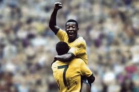

Pelé
Pelé o maior idolo do brasil

Edson Arantes do Nascimento, mais conhecido como Pelé, nasceu em 23 de outubro de 1940, na cidade de Três Corações, Minas Gerais. Desde muito jovem, Pelé mostrou seu talento e paixão pelo futebol. Ele começou a jogar nas ruas e, aos 15 anos, foi descoberto e se tornou jogador profissional no Santos Futebol Clube.
O Rei do Futebol atuou por apenas dois clubes sendo Santos e Cosmos, além de defender a Seleção Brasileira em três copas. Pelé nasceu Edson Arantes do Nascimento, em Três Corações, em Minas Gerais, no dia 23 de outubro de 1940